The Final Project
Converting Learnings to Middle School Projects
For my final project I choose to adjust our learnings into projects that could be done at the middle school level. I wanted to find a modeling program that would work with kids and create a few projects using the skills learned in this class. I decided that I would create a kids version of the casting and molding project and that I would do some mesh editing to create a project where students created add-ons to a robot they would be able to program. I made some adjustments after feedback to the original project proposal after feedback to simplify the project. The updates can be found in the below image. The biggest update is the robot did not need to work yet, but needed to stand and be able to have add-ons and an example be created.
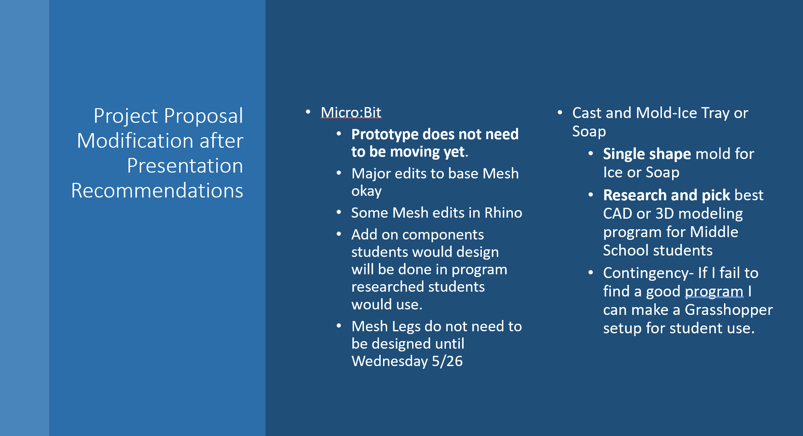Finding a modeling program for kids and the ice/candle
The first part of this project entailed finding a kid friendly CAD or modeling program. I thought TynkerCad which I have created a model with would work, but I found that the meshes it exports have a lot of issues. This fueld my search to find an easy to use modeling program. I tried multiple program, many would be usable in at least some instances, however getting quality meshes exported proved to be the most challenging part. Many of these seemed better for 3D models that would not be printed. I ended up decideding on 3D Builder which seemed to be most consistant in exporting out printable meshes. Below you can see the modeling programs I looked at.
Modeling Programs I tried creating molds and exporting moldes with.

Enganging with my twitter edu network about 3D modeling woes
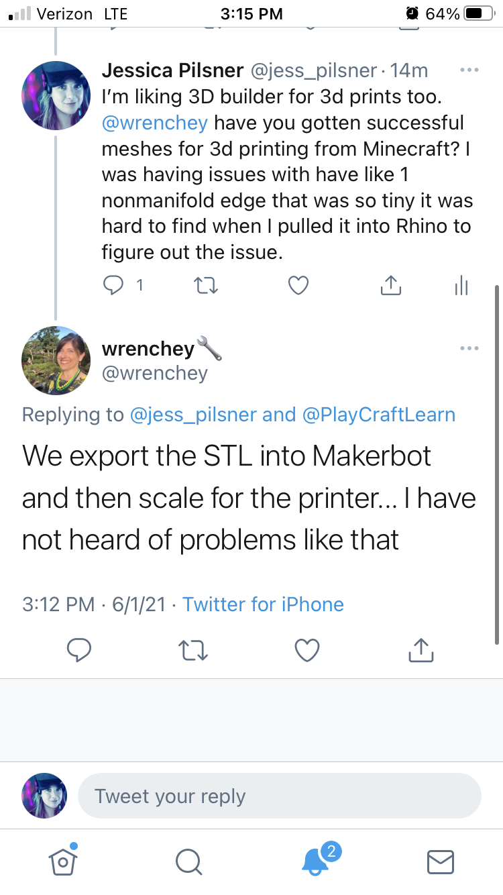Making my mold with 3D builder
Building a mold in 3D builder was actually quite easy. Within the insert tab in the program, it all has all the basic necessary functions that I had needed to be able to get measurements, Boolean difference out space,and ways for me to build out the wall. I was also able to experiment, and I learned that I could also do splits, so it would be a great program to do a two part mold in as well. Meaning I could do a two part candle mold within paint 3D as well with my older students.
I decided to make a heart shaped mold, and I decided that it made sense to do just one mold rather than a full tray because that would take up both more time to print and more materials. When planning for an entire class project, I definitely want to limit that. So I decided to make a heart shape either ice maker mold or soap mold.
For my own product I decided to make soup because I didn't have food safe Oomoo. I was really excited when it exported a great mesh and I got it printing. I was able to make my silicone mold successfully and pull it out. I then bought the base for soap, added some essential oils, and dried flowers to my mold. I was able to successfully finish my soap models.I have concluded that this would be a great activity even down to the 4th grade level. 3D builder was quite easy to use all you needed to do was create a box then take the difference with another box and you had the walls of the tray then I was able to create my heart model inside get that leveled right and then I was able to remove any pieces that were hanging off the edge with some of the split components. I think there could be a lot of flexibility in what students create in simple ways and we got them to think about what are they going to be able to pull out and just work through the workflow of making a mold for mold and what that should look like. I'm really excited to do it with kids. I also love my soap!
Minecraft Failed Model
3D Builder model
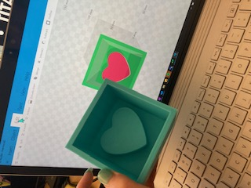 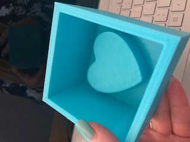 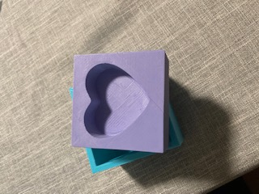 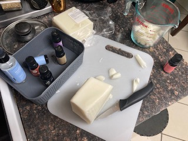 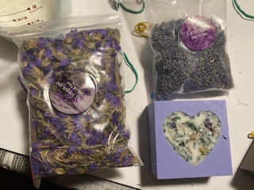 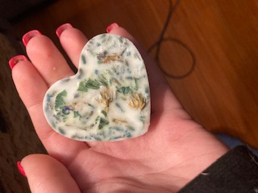 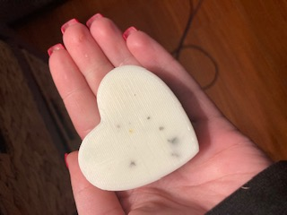 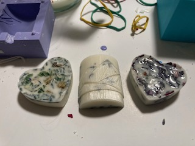 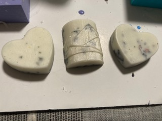
Micro:Bit Robot
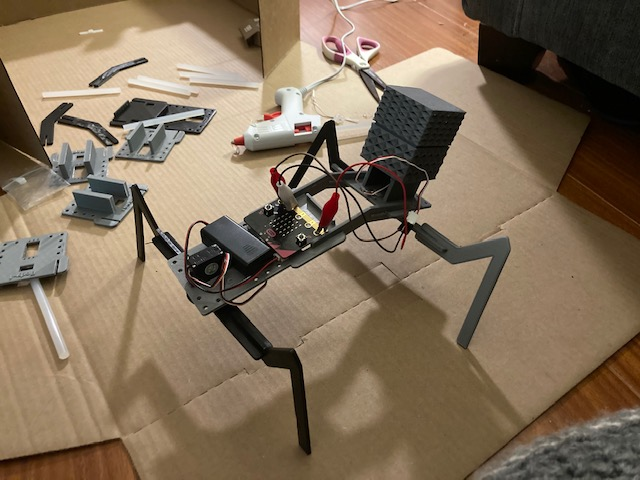
For the microbit robot project my goal was to create a base for a 3D printed microbit robot that I could use with my 4th grade students. I would design out the base and movement mechanisms using and adjusting a mesh that I found on Thingiverse. My students would be able to give the robot some kind of purpose and design it's other components. As an example, I'm making a snack delivery robot so I'll be creating a container that will go on the robot to hold the snacks. For the project I decided that it does not need to be completely functional yet , more of a proof of concept. However, it would be nice to get it fully actionable. I have done a bit of research on how to use the Motors to make moving legs that the students will be able to program with the microbit. The goal be limiting the supplies I need to keep costs down this may mean I switch to maybe just a front wheel drive robot, rather than having movement in both parts, then using wheels in the back which would be a big adjustment from the original design. What I found on Thingiverse wall has the models does not have all of the materials or very good instructions on how we actually build his model. So I'm going to have to do a lot of tinkering and mostly design my own using his as a starting block. It's also in Italian , so I'm using a translator which is linking me to some of his older projects that have given me some insights but not a lot. I did some research on figuring out what I would need to get the Motors connected to the microbit and was able to find that so I ordered those pieces to get me stated.
This project overall went smoothly, a combination of happy meshes and I have learned things!
- Step 1: I printed out the models from Thingiverse to get a feel for what edits would need to be made and if it worked. Link to resource: https://www.maffucci.it/2018/01/04/walkerbotbit-two-servo-walking-robot-controlled-by-bbc-microbit-available-3d-print-file/
- Step 2: I did meshtonurbs in Rhino to allow my meshes for the robot legs and body components. The major edit I wanted to make was to add text to each component.
I wanted to add the name of the part to help kids build it and a group number so different groups of students would not get their peieces mixed up. This went well and I was able to print mall the pieces.
- Next, I used Rhino add some raised tabs that components could be added to the robot. That went well.
- Then, I used 3D builder as my students would to create a box for my snack deliverybot. I used one of the prebuilt box models in the program, and then
pulled in the model of the robot base with tabs to subtract out the tabs from the box. I created mock video to show students how to do that.
- I found that after printing my box that the tabs did not quite fit. I'm wondering if pulling the model from rhino vs. 3D builder. I ended up updated the model in rhino to fix it.
- I ran into some challenges figuring out to get the legs of the bot working. It actually required more parts than advertized. I ended up doing my own research to figure out how to use the
micro:bit with the servos. Unfortunetly I learned I do not have the correct power/servo combnation. However, I did not need it to work based on my project proposal.
- Finally, I assebled the peices and have a standing robot.
While this project taught be a lot about using other models to create a robot that would work for kids and I have a successful prototype. I do not think I would
use this model with students. It is still pretty fragile becuase it relies too much on the servos to support the legs. Not ideal for adding accessories that I would want students to design.
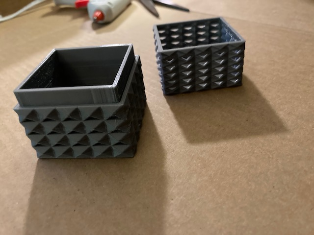
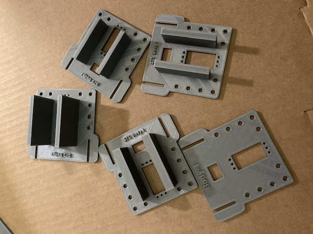
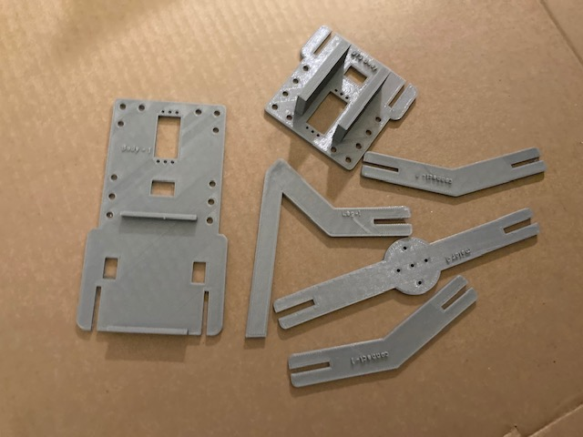
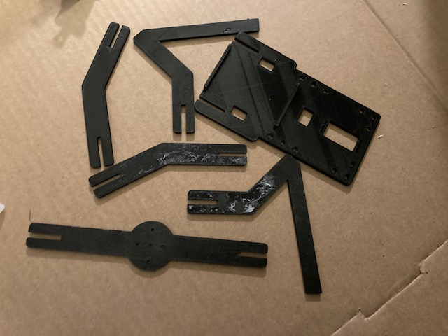